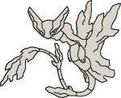

Remove background
A wand, a box and two brushes. Here three clicks took the background out, the gaps inside the chain included.
Standee Maker traces your image, builds the figure and makes the stand that holds it next to your card.
 Drag to turn
Drag to turn


A drawing, a render or a photo. If it has a background, a few clicks take it out.
The outline and the line art come out as two SVGs that sit exactly on top of each other.
One STL for the figure, base included, and one for the stand. Open them in any slicer.
Four drawings with Extra Effort on and every other setting left as it starts.
Drag the line to compare the picture with its trace.
Trace, Figure and Stand are three pages of the same program: pick a subject once and follow it from the outline to the stand.
Trace puts the picture and its outline side by side, at the same height. Size and line width are on the right.


A wand, a box and two brushes. Here three clicks took the background out, the gaps inside the chain included.

An eraser and a pencil for the line art, before it becomes a solid. A stray line goes, a heart goes on.

Press Ctrl K and type a few letters to pick a subject, go to a step, switch to dark mode or open the models folder.
Every step in the real program, on a real subject: the cut-out, the touch-ups, the figure and its stand. Each screen shows where to look.
Freeduring the Beta
Something not covered here? Write to standeemaker.support@gmail.com.

The full program, free during the Beta. No account, and nothing it makes is watermarked.